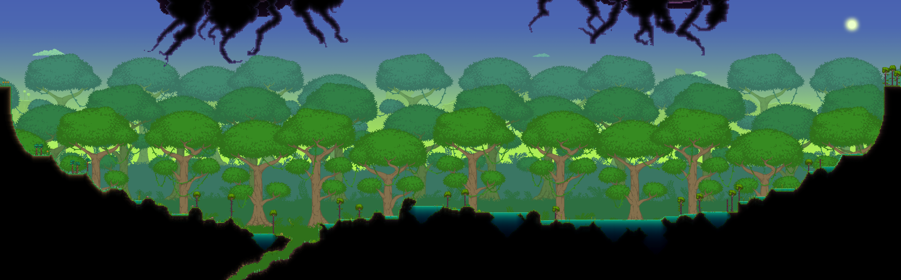

Collection of things I have created in the Terraria Modding API called

Click videos to enlarge them.
DM creamblob on Discord for more info and videos!
A custom rarity I made for Transcendant Abyss and Post-Seraph items.
Transcendant Abyss
An eerie, hostile and dark place filled with cosmic fauna.
Being in the abyss without an astronaut helmet will suffocate you,
making you far weaker.
The abyss' location can be determined by strange, curved terrain.

Houses the cosmic archangel, whom can be summoned at the abandoned Cosmic Cathedral.
Visiting the abyss at midnight might have some surprises...
Bright Galaxy Summon
A summon weapon dropped by the Celestial Seraph, the current final boss of my mod.
Summons a miniature galaxy to obliterate enemies
The galaxy becomes bigger and faster the more you summon
Right Click to turn the galaxy into a shield that can block up to 7 projectiles
The shield has a 15 second cooldown after breaking
Celestial Seraph Arena Boundaries
Boundary used by the Celestial Seraph in some of his attacks.
The fog changes colour depending on the attack and the stars can be hooked on.
The Volcanic Layer
A biome introduced by my mod that covers the region between Caverns and Hell.
Contains hellstone, carbon, ruby and new dangerous enemies.
The rocks will set you on fire, so be careful where you step, or use an obsidian skull.
Parrying
A mechanic added by my mod, that allows you to block attacks when timed perfectly.
You require a shield to parry, and you can obtain shields everywhere in the game from Pre-Boss to Post-Seraph.
(Omg that Sniper Rifle drop, how lucky!)
Laser Mining!
A Post-Moonlord pickaxe from my mod, that doesn't dig fast, but creates connecting laser nodes.
These laser nodes clear any tile between them
Tinkerer NPC
A Town-NPC that moves in after obtaining a modifier item.
She allows you to apply modifiers onto items and craft new items with upgrade items.
The prices are really high, but your items get a 75% discount for any future changes.
You can obtain her phone number later in the game, allowing you to use her services remotely. (With a higher price, of course.)
Home